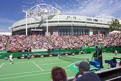

Теніс
Те́ніс (англ. tennis) або вели́кий те́ніс — вид спорту, у якому грає двоє гравців один проти одного, або дві команди по два гравці в кожній, команда проти команди, на майданчику — корті, поділеному навпіл поперечною сіткою.
Мета гри — перекинути ракеткою м'яч через сітку на бік партнера так, щоб м'яч упав у межах майданчика суперника і той не зміг його відбити назад.
Під час гри гравці використовують додаткове ігрове спорядження — ракетку. Вона призначена для відбивання, зміни напрямку та потужності польоту гумового тенісного м'яча. Матч виграє той, хто отримує найбільшу кількість перемог за сетами відповідно до правил гри, що застосовуються відповідно до статі, віку тенісиста і так далі.